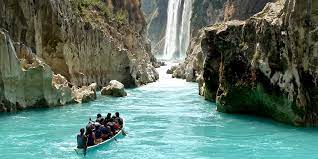
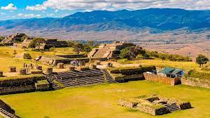
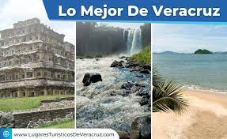

LUGARES TURISTICOS
Ciudad de México es la densamente poblada capital de México que se encuentra a gran altura. Es famosa por su Templo Mayor (un templo azteca del siglo XIII), la Catedral Metropolitana de México, de estilo barroco, de los conquistadores españoles y el Palacio Nacional, que alberga murales históricos de Diego Rivera. Todos estos hitos se ubican en torno a la Plaza de la Constitución, la enorme plaza principal conocida también como el Zócalo.
  